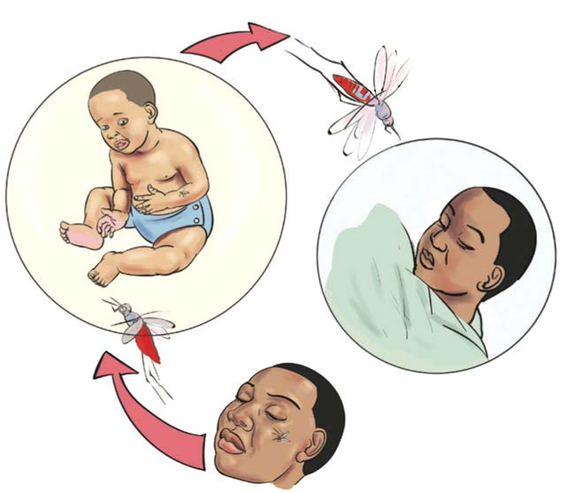

The mosquito transmits malaria by injecting the parasites into the human body when it bites a person. Figure 1 shows how mosquitoes transmit malaria.

Symptoms of malaria
Symptoms of malaria include the following:
- (a) Having a high fever due to the raising of body temperature;
- (b) Feeling cold and shivering;
- (c) Headache;
- (d) General body weakness;
- (e) Vomiting; and
- (f) Loss of appetite.